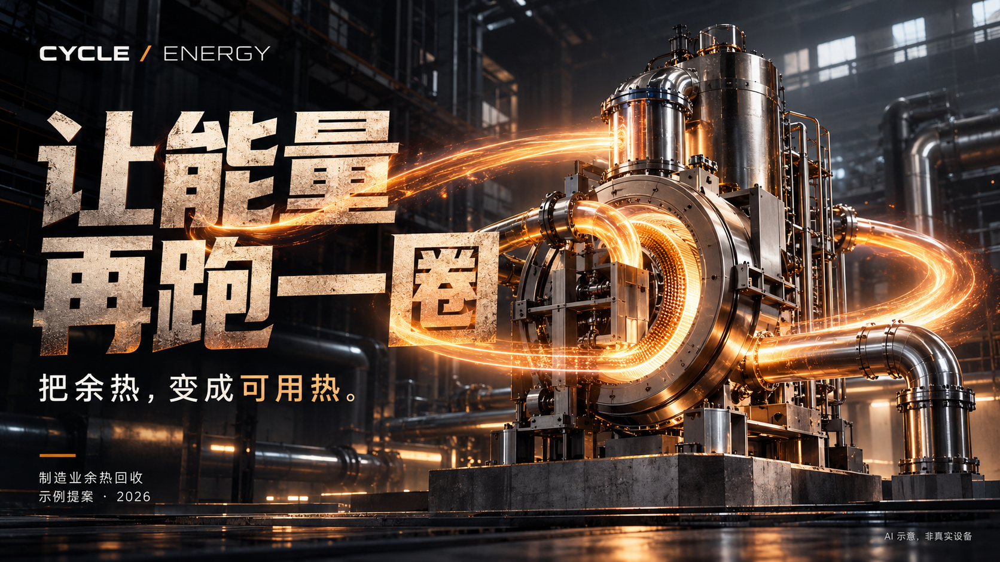
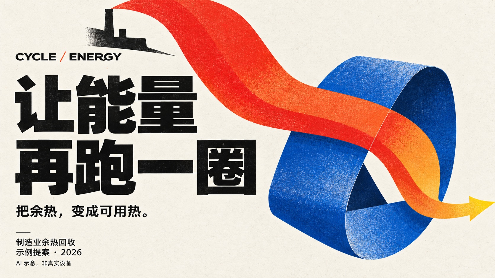
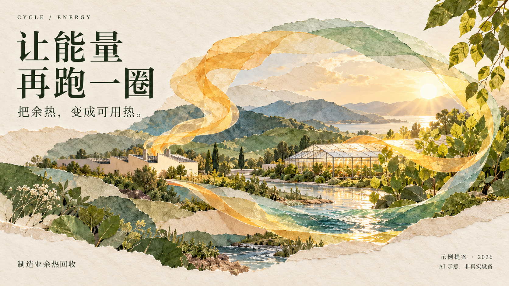

A · 工业产品大片
单体设备、金属材质与暖色热流。适合工业产品、设备方案和项目发布。

三名子智能体分别查看案例图、借鉴原提示词并生成。统一标题与示例状态，构图、字体、材质和颜色自由选择。点击图片查看原尺寸。
这是本轮概念探索，尚未转成可编辑 PPTX；下方三张都保留了原始生成像素与来源记录。
单体设备、金属材质与暖色热流。适合工业产品、设备方案和项目发布。

用巨型标题、朱橙热流和钴蓝纸环组织画面。适合品牌提案、设计汇报和能源传播。

撕边纸艺、暖日光和自然景观。适合可持续传播、公共说明和环境主题。
